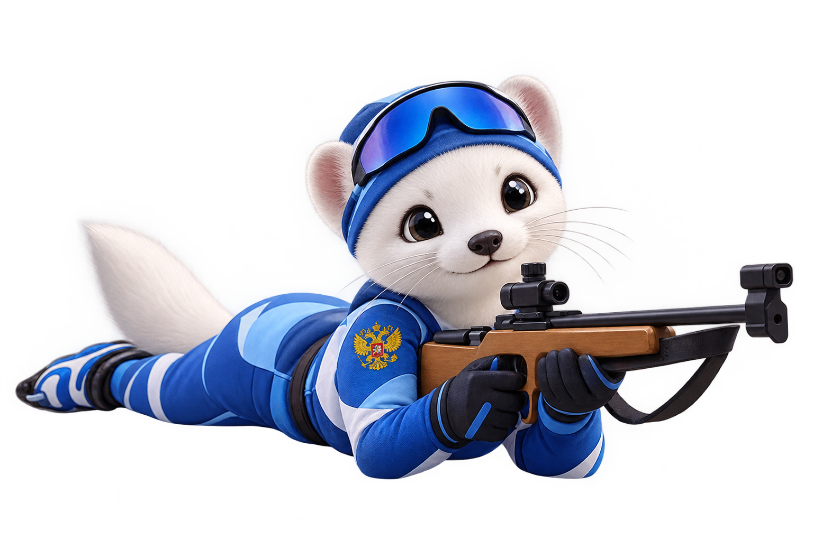

Проект для первого знакомства детей дошкольного возраста с биатлоном. Занятия проходят в игровой и соревновательной форме прямо в детском саду — без снега и без опасного оружия.

«Биатлошка» — это дополнительная образовательная программа для дошкольников, реализуемая при поддержке Министерства просвещения Российской Федерации. Проект разработан Благотворительным фондом «Биатлон Готов к Труду и Обороне».
Занятия проходят в игровой и соревновательной форме, чаще всего в спортивном зале детского сада или на его уличной площадке. Дети выполняют челночный бег и короткие дистанции, после чего подходят к огневому рубежу и стреляют из безопасной пневматической или лазерной винтовки. Вместо штрафного времени — весёлое дополнительное задание: пробежать небольшой круг или сделать несколько приседаний.
Проект готовит детей к сдаче официальных тестов I ступени ГТО. Элементы биатлона тренируют меткость и координацию, которые проверяются в нормативе «Метание теннисного мяча в цель» с расстояния 6 метров в закреплённый на стене обруч.